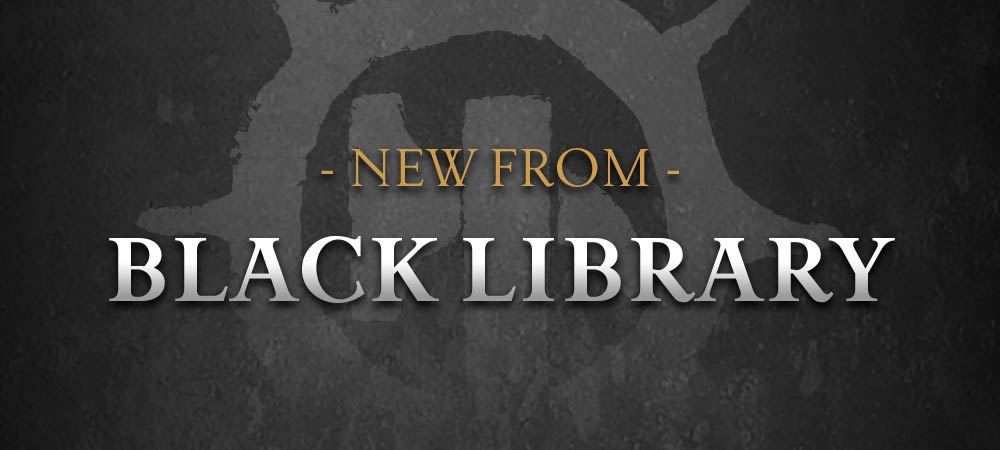

The Lord of Shadows Strikes
Prepare your bookshelves – the Ravenlord is coming to roost on them. Corax: Lord of Shadows, the tenth book in the Horus Heresy Primarchs series, each volume of which focuses on one of the Emperor’s sons, arrives in hardback and eBook formats next Saturday – and you can pre-order this latest novel by Guy Haley now.
The novel is set at the height of the Great Crusade, long before the massacre of the Raven Guard at Isstvan V and the events of Deliverance Lost and the Corax anthology. It shows Corax not as the tortured survivor he is in the Heresy, but as an icon of hope and freedom. Leading his Legion into battle in the void-city of Zenith, Corax faces an unthinkable horror – a bio-weapon from the Dark Age of Technology. As allies turn on one another, it falls to Corax and his Raven Guard to bring a swift resolution to the war and save their fellow Imperial servants.
As the story proceeds, you’ll get new insights into the primarch and the hopes he had for his Legion and mankind before Horus brought it all crashing down – as well as the high-octane action Guy Haley is great at delivering.
Corax: Lord of Shadows is available to pre-order now from Black Library, iBooks and the Kindle store.